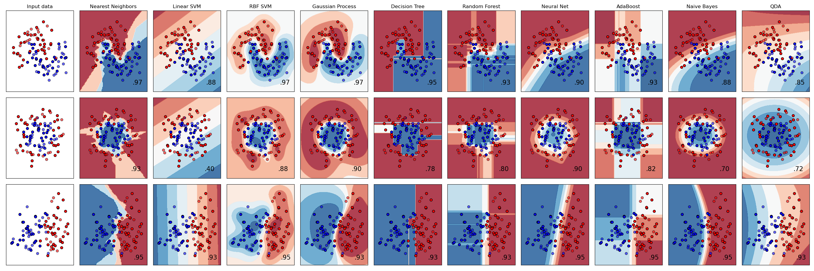

Classification
Classification is a type of problem we can solve with machine learning techniques. Any classification problem is shaped as a set of characteristic that we want to label. Example: finding the correct disease to a patient, find the specie of an animal, ...
Some classification algorithms are:
Types of classification
We can find two type of classification (that, in reality, are the same for all machine learning techniques):
- Unsupervised learning . Often, with classification, the unsupervised techniques are known with other names different from classification (PCA is often referred as a dimensionality reduction technique)
- Supervised learning -> Supervised classification
Evaluation of a classifier
We want to know which is the best combination of model, algorithms and parameter to classify our data. => Evaluation of a classifier
Imbalance data in classification
Some classes could have a minority representation in the data and this could alter the classifier result (e.s. rare events). A possible solution to this issue is to weight the classes that changes the cost function to take in exam the imbalance of the classes. It is very similar to oversampling the minority class in order to produce a balanced training set.
Another way to resolve this issue is Undersampling that reduces the number of cases of the majority classes in order to balance the train set (this, of course, reduce the amount of knowledge in the set)
Oversampling with SMOTE
It is an oversampling technique that tries to synthesize new examples of the minority classes. It tries to generate a new object taking a random element from the minority class and generating the new element as a point in between the choosen element and one of his neighbours.
Classification techniques comparison
